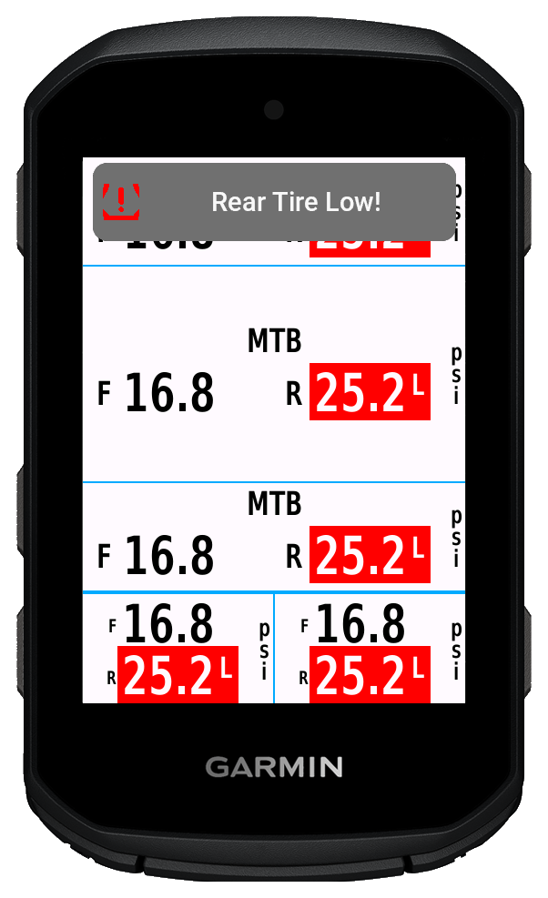

TyreWiz
Quarq TyreWiz 1.0 and 2.0
TubeWitch supports Quarq TyreWiz 1.0 and 2.0 sensors for live front and rear pressure on Garmin.
TyreWiz on Garmin
TubeWitch for TyreWiz is a Garmin Connect IQ data field for riders who want live tire pressure from SRAM/Quarq TyreWiz sensors on a Garmin Edge device or compatible watch.
It supports Quarq TyreWiz 1.0 and 2.0 sensors, Quarq TyreWiz for Moto sensors, and Zipp 303 SW wheels with the integrated Zipp AXS Wheel Sensor.

This page is for riders searching for SRAM/Quarq TyreWiz Garmin support or a Garmin data field for TyreWiz.
TyreWiz
TubeWitch supports Quarq TyreWiz 1.0 and 2.0 sensors for live front and rear pressure on Garmin.
Moto
TyreWiz for Moto sensors can be shown on Garmin devices with the same alerting and layout controls.
Zipp
Zipp 303 SW wheels with the integrated Zipp AXS Wheel Sensor are also supported.
Garmin
TubeWitch supports Garmin Edge devices and Garmin watches, with layout and alert behavior tuned to the device.
Show front and rear TyreWiz pressure directly on the ride screen instead of checking a mobile app.
Popup, tone, vibration, delay, and reset controls help avoid nuisance duplicate alarms.
Store up to five named sensor sets and switch manually, by touch, or through Auto behavior.
Record pressure from the active set and review average pressures and set names in Garmin Connect IQ stats.
Even on older Garmin devices where the official TyreWiz data field still works, TubeWitch is often the better choice because it adds audible alerts, popup and vibration warnings, flexible layouts, stale-data indicators, and more setup control. TubeWitch can keep watch in the background, so popup and audible alerts still work without keeping the data field on screen.
How it works

Yes. Matches the SRAM mobile app exactly.
Yes. TubeWitch supports Garmin Edge devices and Garmin watches.
Yes. TubeWitch supports Zipp 303 SW wheels that use the integrated Zipp AXS Wheel Sensor.
Yes. TubeWitch can record pressure from the active sensor set, alarms, and related status.
Need a Garmin TyreWiz data field that works with SRAM/Quarq TyreWiz products? Start with the Garmin App Store listing, then use the setup guide, FAQ, and alert guide to finish configuration.